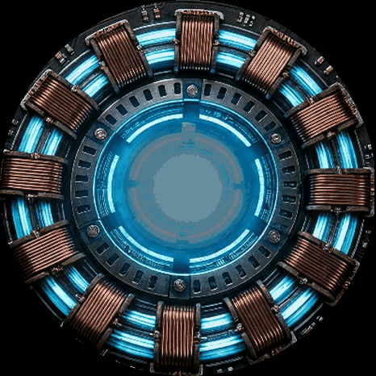
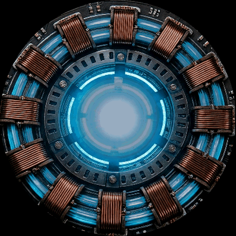
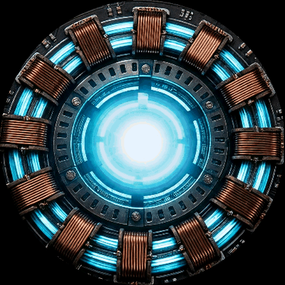

Reactor animation — the three directions, looping
Each loop is rendered on the real reactor plate at the device's own 10 Hz cadence. Judge the motion here; the final verdict is always on the device itself.
The real one — film reference
The actual prop insert from the film: core idles bright and steady, bloom through the centre, ten coils evenly lit. This is the behaviour the directions below are measured against.

A — Cinematic Core
The current heartbeat at full drama: deep-dim rest, fast surge, bloom spilling past the ring, coils firing in a rotating sequence. 3.4 s loop.

B — Charge Sweep
The ring powers down at idle; a bright arc sweeps and accumulates sector by sector, then discharges into a core flare. 4.6 s loop.

C — Unstable Core
A bright, calm core with organic micro-flicker, interrupted by irregular surges of different heights — no fixed period. 9.0 s loop.
